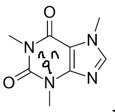
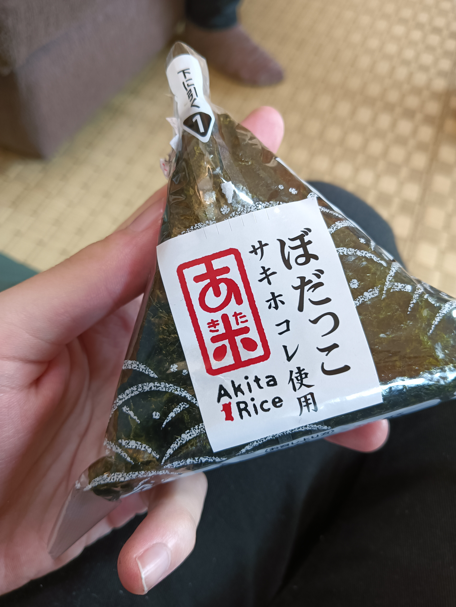
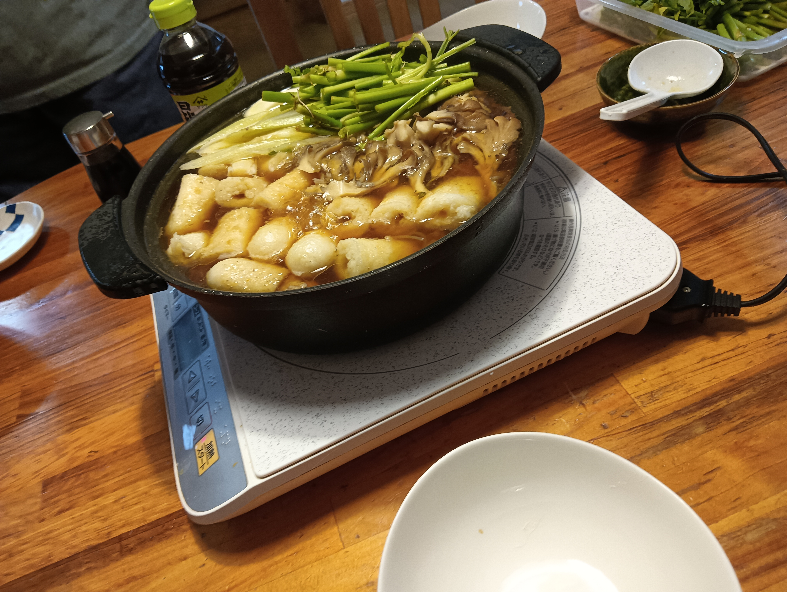

Caffeineの試薬保管庫
秋田旅行2025夏 (前編)
2025-09-12
秋田はいいぞ！！
はいどーも、Caffeineです。
東京からバスに揺られて約１１時間。
秋田県能代市に行って祖父母に会ってきました。

顔や身体から多少の老いは感じるものの、二人とも元気にバリバリ歩いていて、孫はうれしいです。
みなさん能代市ってご存じですか？
スラムダンクが好きな人ととかはバスケの町として知ってるかも。
JAXAのロケット実験場があり、ロケットの町としても有名です。ロケットを作ってる人は能代に飛ばしに来たことがあるかもしれません。
そんな能代市ですが、人口流出率日本一の秋田のさらに地方部となればその寂れ方は伊達ではありません。記憶に残っているお店はほとんど潰れてしまい、一方で葬式場は帰郷するたびにどんどん増えています。
でも意外に悪くないんですよ。
なんたって能代にはイオン（ジャスコ）もコンビニも飲食チェーンも複数個あります。
田んぼすらない草と木に覆われた地域に比べると100億倍都会です。
なお丸亀製麺は撤退した模様
みなさん是非移住してくださいね
~ここから旅行記~
能代にきて一番最初に食べたのはキオスクで買ったぼだっこおにぎりでした。
ぼだっこは塩辛い鮭のことです。有無を言わさないストレートなおいしさ。
初日の夜は祖父が秋田名物のきりたんぽ鍋を作ってくれました。
きりたんぽ鍋は、鶏肉やキノコで出汁をとった醤油ベースのスープに、
きりたんぽとセリ、好みの具材を入れた鍋です。
見た目は地味ですが、一度食べると忘れられない魔性のうまさがあります。
ちなみに自分の父はきりたんぽ鍋や水炊きなどの鶏肉を使った鍋が苦手だそうです。なんでも昔は鍋のために飼っていた鶏を家で捌いていて、その時の屠畜がトラウマなんだとか。
全くの余談ですが、北大には集中講義で鶏を捌くことのできる授業があります。今の時代だとなかなかできない経験ができておすすめです
初日は大好物をおなかいっぱい食べて幸せな気持ちで就寝!
書くの疲れたので今回はここまで！